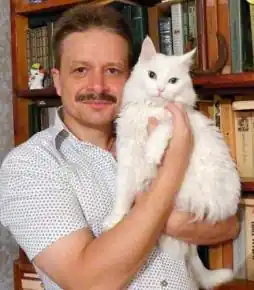

Народився: 10 вересня 1967 року, с. Яблучне, Сумська обл., УРСР.
Валентин Бердт (справжнє ім'я Бердута Валентин Корнійович) — український письменник, журналіст, редактор, видавець. Народився в селянській родині. У 1984 році закінчив Яблучанський середню школу і в тому ж році вступив на філологічний факультет (відділення української філології) Харківського державного університету ім. Максима Горького. У 1986-1988 служив в лавах Радянської армії. Після демобілізації відновив навчання в університеті. У 1988 році перевівся на заочне відділення і почав журналістську роботу кореспондентом заводської газети "Луч" НВО "ХЕМЗ" (м.Харків). Однак вищу освіту так і не отримав, оскільки на шостому курсі припинив навчання по ряду причин. З 1990 по 1991 працював спецкором харківської міської газети "Слобода". З 1991 по 1992 роки був заступником головного редактора харківської газети для підлітків та юнацтва "Ба-бах!". У період з 1992 по 1994 роки займався видавничою справою. У 1996 році повернувся до журналістики. Працював кореспондентом в харківській молодіжній газеті "Подія". У 1998 році перейшов до редакції тижневика "Грані" на посаду кореспондента. Протягом 2000-2001 років працював кореспондентом обласної газети "Час". У 2001 році був завідувачем відділу інформації харківської міської газети "Слобода". У 2002 році перейшов до редакції галузевої газети "Южная магистраль" (Харків). З 2006 року — власний кореспондент всеукраїнської транспортної газети "Магістраль" на Південній залізниці. Член Національної Спілки журналістів України (з 1996 року).
Літературну творчість розпочинав як поет. Видав збірку верлібрів "Пекло". Вірші та оповідання друкувалися в місцевій періодиці, українських журналах "Український посів", "Медіа-Поліс" та антології молодої поезії "Початки" ("Факел", 1998). Як прозаїк дебютував романом "Останній клієнт". З 2009 року активно працює в дитячій літературі.